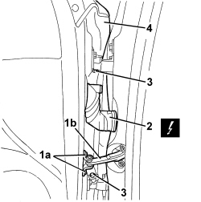

7210E36 R.R. FRONT SIDE DOOR
- Path
- Procedures > 72 PANELS AND FRAMES > 7210 REMOVING-REFITTING > 7210E EXTERNAL PARTS > 7210E36 R.R. FRONT SIDE DOOR
- Kind
- repair procedure (removal / refitting; the operation number is the code)
- Applies to
- all engines; all production periods
- Interactive page
- https://sloeber94.github.io/elrnDB/#/939011402
Applies to: all engines; all production periods
 Removing
Removing
 Refitting
Refitting- Lower the front window to the end of travel position.
1. Undo bolts (1a) fixing check strap (1b) to the door, then close the door momentarily so that the check strap is inside.
2. Detach the electrical connection.
Description | Component |
|---|---|
DRIVER'S FRONT DOOR JOIN | |
3. Undo the bolts for the hinges.
4. Lift up the door and remove it.

Applies to: all engines; all production periods
Refitting
Removing- Check that the door is not damaged.
- Place the door on the hinges.
- Tighten the bolts for the hinges to the recommended torque.
Component | Fastening | dia | Value (daNm) | Validity |
|---|---|---|---|---|
DOOR HALF HINGES | Bolt | M6x14 | 1.2 ÷ 1.8 |
- Attach the electrical connection.
- Check that the various consumers on the door are working.
- Get the check strap out and tighten the bolts to the recommended torque.
Component | Fastening | dia | Value (daNm) | Validity |
|---|---|---|---|---|
DOOR CHECK STRAP | Bolt | M6x22 | 0.7 ÷ 1.1 |
- Check the door alignment and, if necessary, carry out:
Topics linked from this page (3)
- 7005A14 FRONT SIDE DOOR - ADJUST CENTERING AND MOULDING - INCLUDES ADAPTATION OF HINGES AND SEALS ON DOOR COMPARTMENT
- D030 DRIVER'S FRONT DOOR COUPLING
- D031 PASSENGER FRONT DOOR COUPLING
Topics that link to this page (25)
- 1820B21 MASTER CYLINDER (PUMP) - R R FOR RIGHT HAND DRIVE VERSIONS
- 3330B02 PEDAL ASSEMBLY - R.R
- 3330B23 BRAKE PEDAL - R.R. FOR RIGHT HAND DRIVE VERSIONS
- 3330B27 CLUTCH PEDAL - R.R. FOR RIGHT HAND DRIVE VERSIONS
- 3330B42 PEDAL UNIT SUPPORT - R.R. FOR RIGHT HAND DRIVE VERSIONS
- 3330D18 BRAKE SERVO R R FOR RIGHT HAND DRRIVE VERSIONS
- 5040C10 AIR CONDITIONING CASING - R.R
- 5040C50 AIR CONDITIONING HEATER RADIATOR - R.R.
- 5040C64 A/C EVAPORATOR - R+R
- 5040D80 AIR CONDITIONER SYSTEM WIRING BUNDLE - R R OR REPLACE
- 5040D86 AIR CONDITIONING RIGHT AIR MIXTURE FLAP CONTROL MOTOR - R.R
- 5040D94 AIR CONDITIONING LEFT UPPER AIR DISTRIBUTION FLAP MOTOR (DEFROST) - R.R
- 5040D96 AIR CONDITIONING RIGHT UPPER DISTRIBUTION FLAP MOTOR (DEFROST) - R.R
- 5505C31 BUILT-IN WIRING UNDER DASHBOARD - R.R.
- 5505C41 PASSENGER COMPARTMENT WIRING - R.R
- 7210A60 R.R. FRONT PILLAR
- 7210A74 R R FACIA SUPPORT BEAM
- 7210B40 R.R. REAR INNER WHEEL ARCH
- 7210B45 R.R. REAR WING FRAME
- 7210B51 R R UPPER CHANNEL STIFFENER, (ONE) LH OR RH
- 7210B52 R.R. REAR WING LONGITUDINAL REINFORCEMENT (ONE), LEFT OR RIGHT
- 7210B65 R.R. REAR PILLAR (WING INTERIOR)
- 7210E34 R.R. ROOF PANEL/SIDE PANEL CONNECTION PROFILE-MOULDING
- 7210E44 R.R. DOOR SILL RAIL OUTER TRIM
- 7210E45 R.R. PARTIAL DOOR SILL RAIL OUTER TRIM